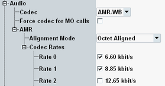
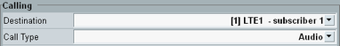

Initial situation: The DUT has registered to the IMS server. The GUI shows the "IMS" tab of the "Data Application Control" dialog.
Press the "Virtual Subscriber" hotkey.
A dialog box opens.
Press the leftmost button to access the basic settings.
Configure the "Virtual 1" tab as follows:
Set the "Signaling Type" compatible to your DUT (call setup with or without SIP preconditions).
Configure the audio codec settings compatible to your DUT.

For video calls, configure the video codec settings compatible to your DUT.
For "Media Endpoint", we use the default value "Loopback".
Press the
 button.
button.The mobile-terminating call (MTC) settings of the virtual subscriber are displayed.
Configure the following call settings:
If there are several registered DUTs, select the "Destination" that you want to call.
Select the "Call Type".

Press the "Call" button.
The dialog box is closed and the DUT is alerted.
A new line is added to the "Events" area. The status in that line equals "Ringing".
Accept the call at the DUT.
The status in the "Events" area changes to "Established".

Perform an echo test. Speak a word into the microphone of the DUT. Listen to the echo at the loudspeaker of the DUT.
For further tests, you can create additional virtual subscriber profiles with different call settings.